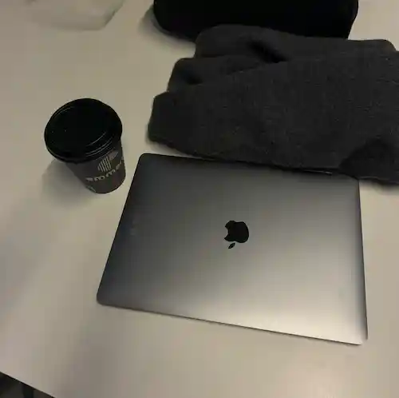

Min computer

Typ
Jeg har en MacBook Air, som jeg købte i 2012, så den er næsten 4 år gammel. Den har fungeret godt og er let, så jeg kan tage den med overalt uden at min taske bliver for tung. Jeg bruger den mest til skolearbejde, men også til at se film i min fritid.
Specifikationer
Her er nogen specifikationer til min computer:
- model
- Macbook Air
- Levetid
- 4 years
- Brugbarhed
- meget god